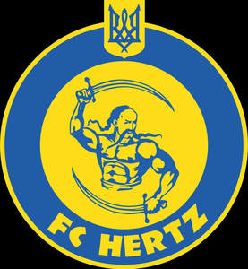

Trade Mark Journal No.2025/014 4 April 2025
UK00004172146 11 March 2025 (9,25,28,35,36,38,41,43,45)

- Class 9
- Computer software for the display of digital media; Media content; Computer application software for streaming audio-visual media content via the internet; Media streaming software; Media and publishing software; Computer software for processing digital images; CMS software [Content management system].
- Class 25
- Parts of clothing, footwear and headgear; Clothing; Footwear; Gloves [clothing]; Gloves as clothing; Headbands [clothing]; Headbands for clothing; Visors [clothing]; Jackets [clothing]; Jackets being sports clothing; Woolen clothing; Gloves for apparel; Knitwear [clothing]; Headgear for wear; Jerseys [clothing]; Leather clothing; Clothing of leather; Leather (Clothing of -); Footwear [excluding orthopedic footwear]; Clothing for leisure wear; Athletic clothing; Ready-to-wear clothing; Sneakers [footwear]; Clothing for sports; Sports clothing; Garments for protecting clothing; Braces for clothing; Rainproof clothing; Oilskins [clothing]; Headgear; Muffs [clothing]; Wristbands [clothing]; Chaps (clothing); Latex clothing; Veils [clothing]; Waterproof clothing; Collars [clothing]; Golf clothing, other than gloves; Gabardines [clothing]; Wooden shoes [footwear]; Bandeaux [clothing]; Aprons [clothing]; Kerchiefs [clothing]; Shorts [clothing]; Men's clothing; Hoods [clothing]; Mitts [clothing]; Water-resistant clothing; Embroidered clothing; Insoles for footwear; Footwear for sport; Footwear for use in sport; Clothing for gymnastics; Knitted clothing; Footwear for sports; Sports footwear; Denims [clothing]; Leather belts [clothing]; Athletic footwear; Footwear for men; Footwear for women; Windproof clothing; Trunks being clothing; Boas [clothing]; Casual clothing; Jackets (Stuff -) [clothing]; Stuff jackets [clothing]; Sports headgear [other than helmets]; Bottoms [clothing]; Cashmere clothing; Layettes [clothing]; Clothing layettes; Leather headwear; Leisure clothing; Hats (Paper -) [clothing]; Paper hats [clothing]; Fabric belts [clothing]; Sports garments.
- Class 28
- Sporting articles and equipment; Sports equipment; Football equipment; Bags specially adapted for sports equipment; Nets for sporting purposes.
- Class 35
- Business management services for footballers.
- Class 36
- Fundraising services; Financial services; Financial sponsorship services; Fund-raising services; Charitable fundraising services; Charitable services, namely financial services; Fundraising and financial sponsorship; Financial services provided to partnerships; Financial services relating to the funding of broadcasting; Financial sponsorship of entertainment activities; Investment of funds (Services for -).
- Class 38
- Digital communications services; Digital communication services; Providing wireless telecommunications via electronic communications networks; Electronic communications services; Wireless digital messaging services; Interactive broadcasting and communications services; Signal transmission for electronic commerce via telecommunication systems and data communication systems; Telecommunications services relating to electronic commerce; Computer communications services for the transmission of information; Communication services for the electronic transmission of data; Audio, video and multimedia broadcasting via the Internet and other communications networks; Communication services for the electronic transmission of images; Mail services utilising the internet and other communications networks; Computer communications for the transmission of information; Mobile media services in the nature of electronic transmission of entertainment media content; Providing access to electronic communications networks and electronic databases.
- Class 41
- Education, entertainment and sports; Education, entertainment and sport services; Sports entertainment services; Sports activities; Sports education services; Entertainment, sporting and cultural activities; Organization of competitions [education or entertainment]; Competitions (Organization of -) [education or entertainment]; Organization of competitions for education or entertainment; Rental services relating to equipment and facilities for education, entertainment, sports and culture; Ticket reservation and booking services for education, entertainment and sports activities and events; Organisation of competitions [education or entertainment]; Organisation of competitions (education or entertainment); Competitions (organisation of -) [education or entertainment]; Organisation of competitions for education or entertainment; Arranging of competitions for education or entertainment; Education services relating to sports; Educational services relating to sports; Entertainment services relating to sport; Entertainment services in the nature of organizing social entertainment events; Entertainment services in the nature of arranging social entertainment events; Entertainment, education and instruction services; Sporting education services; Entertainment services in the nature of sporting events; Conducting of entertainment activities; Providing online newsletters in the fields of sports entertainment; Summer camps [entertainment and education]; Providing online entertainment in the nature of fantasy sports leagues; Organisation of competitions [education and/or entertainment]; Entertainment services in the nature of competitions; Entertainment services relating to sporting events; Entertainment services for children; Coaching services for sporting activities; Sporting and recreational activities; Entertainment; Educational and training services relating to sport; Sports instruction services; Sports and fitness services; Organisation of entertainment activities for summer camps; Entertainment services; Sporting activities; Providing facilities for sporting events, sports and athletic competitions and awards programmes; Organisation of events for cultural, entertainment and sporting purposes; Social club services for entertainment purposes; Instruction in sporting activities; Sporting and cultural activities; Cultural and sporting activities; Organising of sports and sports events; Entertainment services relating to competitions; Entertainment club services; Club entertainment services; Club services [entertainment]; Information relating to sports education; Organization of entertainment competitions; Entertainment in the nature of soccer games; Educational and instruction services relating to sport; Entertainment in the nature of football games; Providing facilities for sports recreation; Arranging and conducting of competitions [education or entertainment]; Sports camp services; Services for the organisation of sports events; Organising of sports competitions and sports events; Organising of sports events and of sports competitions; Corporate entertainment services; Organisation of entertainment and cultural events; Organization of entertainment events; Sports club services; Interactive entertainment services; Providing facilities for sports events; Sports training; Training in sports; Preparation of entertainment programmes for broadcasting; Organisation of entertainment services; Organisation of entertainment events; Organisation of entertainment competitions; Organisation of sports activities for summer camps; Sports information services; Instruction courses relating to sporting activities; Instruction services relating to sports; Hospitality services (entertainment); Popular entertainment services; Entertainment in the form of television programmes (Services providing -); Club education services; Providing will-call ticket services for entertainment, sporting and cultural events; Provision of club entertainment services; Sports coaching services; Educational and training services relating to games; Instruction in sports; Organisation of conferences related to entertainment; Providing facilities for recreation activities; Provision of facilities for outdoor recreational activities; Camp services (Holiday -) [entertainment]; Holiday camp services [entertainment].
- Class 43
- Catering services for hospitality suites; Catering services; Business catering services; Catering services for company cafeterias; Catering services for educational establishments; Outside catering services; Mobile catering services; Catering; Catering services for the provision of food and drink; Charitable services, namely providing food and drink catering; Club services for the provision of food and drink; Cafe services; Catering for the provision of food and beverages; Services for providing food; Café services.
- Class 45
- Licensing of trademarks [legal services]; Licensing of intellectual property [legal services]; Licensing of intellectual property in the field of trademarks [legal services]; Legal services relating to the exploitation of broadcasting rights; Legal services relating to intellectual property rights; Professional legal consultations relating to franchising; Legal services relating to the exploitation of intellectual property rights.
FOOTBALL CLUB HERTZ LIMITED